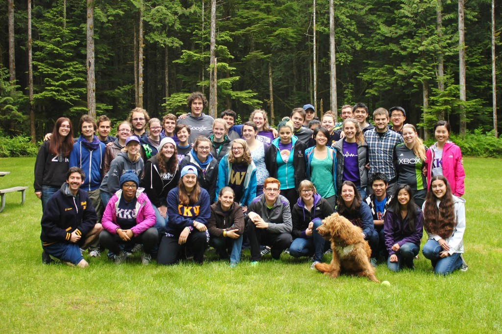
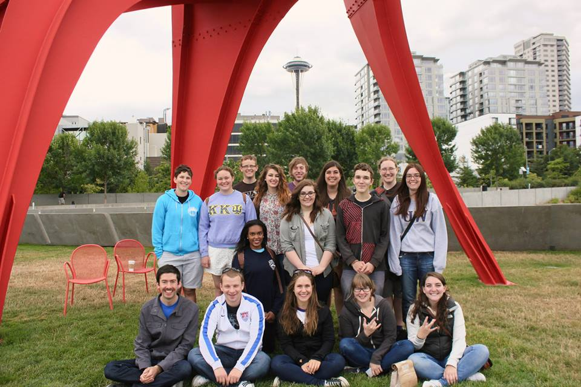
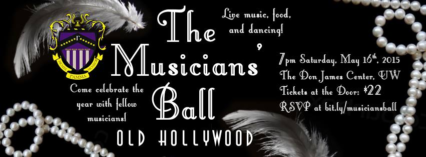
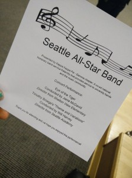

-

NEWS
Gamma Gallops into NatCon!
We are very honored to be representing Gamma at the 2015 National Convention in Lexington, KY as Chapter Leadership Award Recipients. Gamma Brothers Si Si Chen, Lindsay Culp, and Sam Svilar will be presenting on Read more...
By admin, 2 years ago -

NEWS
Washington Weekend: Thank you!
Thank you to everyone who came out for the 8th annual Washington Weekend! We had a blast at Gasworks Park celebrating our Chapter’s 22nd birthday with lots of food, cornhole, and LED-lit balloon lanterns! It Read more...
By admin, 2 years ago -
NEWS
Mark Your Calendars, for Washington Weekend!
The Gamma Chapter of Kappa Kappa Psi is proud to present Washington Weekend 2015! Please join us July 10th-12th in Seattle, WA for a weekend full of fun! More information and registration to come. Questions Read more...
By admin, 3 years ago -

NEWS
Musician’s Ball
The Gamma Chapter of Kappa Kappa Psi invites all musicians associated with the University of Washington to join us on May 16, 2015 for the first ever Musician’s Ball! Doors open at the Don James Read more...
By admin, 3 years ago -

NEWS
Seattle All-Star Band
On Sunday March 29th, the Gamma chapter of Kappa Kappa Psi had the honor of performing with eleven young local musicians and being conducted by Will Harvey of Seattle Academy (and alumnus of Gamma) as Read more...
By admin, 3 years ago